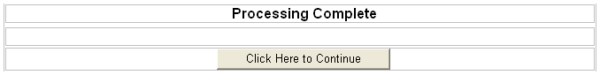

ASWMAINTOPT.A5W
Purpose
The ASWMAINTOPT.A5W page runs the Clear Empty Carts operation selected in the ASWMAINT.A5W page.
Description
The ASWMAINTOPT.A5W page runs in the main body section of the ASWPROCESSING.A5W frame set. ASWMAINTOPT.A5W includes the table delete empty records script.
A Continue button uses inline JavaScript to open the frame 'break out' page.
 Note : Since this page
opens within a frame set, any normal RESPONSE.REDIRECT()
will just open the page defined in the body section of the frame set.
Any redirect must be sent to a special page FRAMEEXIT.A5W
that will 'break out' of the frame set. The name of the page to open after
the 'break out' must be in the pg parameter.
Note : Since this page
opens within a frame set, any normal RESPONSE.REDIRECT()
will just open the page defined in the body section of the frame set.
Any redirect must be sent to a special page FRAMEEXIT.A5W
that will 'break out' of the frame set. The name of the page to open after
the 'break out' must be in the pg parameter.
ASWMAINTOPT.A5W is an internal page and must have a login test for internal users. The normal login test code has a redirect. However, since this page is within a frameset, a redirect would open the page within the frameset. So this page is always allowed, but the test here returns the current user values. The code after the login test will redirect to the 'break out' page if an internal user is not logged in.
Links
The ASWPROCESSING.A5W page calls the ASWMAINTOPT.A5W page.

ASWPRINTRPT.A5W in the WYSIWYG tab of the HTML Editor
Edits to the Page Source
If ASWMAINTOPT.A5W was opened without an internal user logged in, the script loads the FRAMEEXIT.A5W page, which then opens the ASWINDEX.A5W page. The page uses the function a5ws_logged_in_user_values() to determine if a user is logged in.
|
dim pUser as p a5ws_logged_in_user_values(pUser,request,session) if pUser.userid = "" ' no one logged in response.redirect("frameexit.a5w?pg=aswindex.a5w") end elseif left(pUser.ulink,1) <> "I" ' not internal user response.redirect("frameexit.a5w?pg=aswindex.a5w") end end if sleep(.5) ' give top frame time to display |
The script deletes the records in SHOP_CART.DBF that have NULL Session_ID values.
|
a_tbl = table.open( "PathAlias.ADB_Path\ shop_cart.dbf ") a_tbl.delete_range( "Session_Id = \"\"") a_tbl.close() |
If the page does not exit beforehand, it eventually displays "Processing Complete" and a button with the label "Click Here to Continue". Clicking this button loads the FRAMEEXIT.A5W page, which then opens the ASWINDEX.A5W page.
|